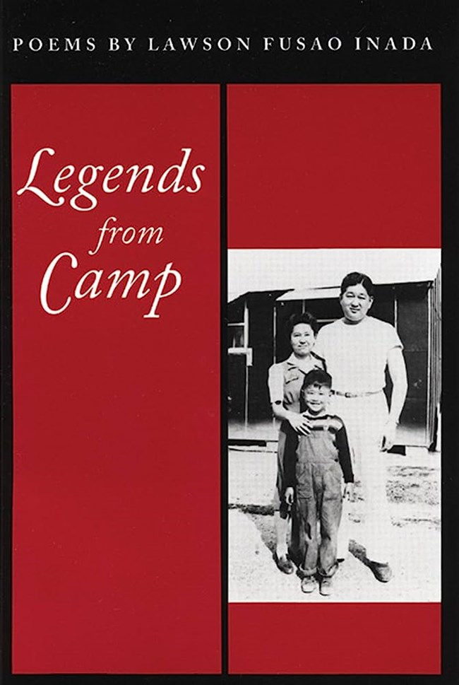

A collection of poems from former Oregon Poet Laureate, Lawson Fusao Inada, Legends from Camp combines history, poetry, music, and personal memory to explore the nuances and complexities of Japanese American identity. The collection spans five sections that cover different moments of Inada's life such as his experience in an internment camp as a child, his return and upbringing in Fresno, discovery of jazz music, and his experience moving to and settling down in Oregon. Across these sections, Inada explores themes of place, identity, community, myth, memory, and cultural belonging.
“To appreciate what Oregon has, and is, / you have to imagine that Oregon doesn’t exist.” (From the Poem “Appreciating Oregon”)
While you could certainly make an argument for including this collection in a guide to California literature, the themes of place that Inada carries through the duration of this book secures it as a powerful instance of Oregon literature as well. One of the things that makes Legends from Camp so compelling is that it resists treating place as something stable or easily defined. Instead, Inada presents home as something formed through memory, movement, and lived experience. In doing so, the collection offers a potential vision of Oregon that is shaped not only by geography, but by the people and histories that continue to redefine it.
Inada renders place and home not simply as an objective space or a dot on a map, but as something that is deliberately created, managed, and built time and time again as life evolves and changes. Memory, history, and myth intersect throughout these poems to highlight place and its immaterial nature. As the poem “To Get to Fresno” explains, in order to get to Fresno “you have to / live in Fresno, //you have to / be in Fresno / for a long time; // you have to drive all around Fresno / over and over;” (38). Here, a place cannot simply be determined through an understanding of geography or a brief visit. The poem suggests that the true Fresno emerges through accumulated experiences and memories, where the city becomes legible to those who have spent the time inhabiting and exploring it. In this way, a place also becomes something that moves with someone. One cannot enter a new space with neutrality; their version of the world will always be shaped and understood by where they have been before.
That idea of place as something created through experiences and continually carried with someone feels especially apparent in the collection's opening section, “Camp,” where Inada reflects on his childhood incarceration during World War II. One of the camps where Inada and his family were detained was a former fairground, so the idea of a site associated with community gatherings being transformed into a site of confinement illustrates how the meaning of place is literally never fixed. Rather, places accumulate significance through the histories that unfold within and around them. This concern with memory and the instability of place is especially evident in the title poem, “Legends from Camp,” where Inada interweaves childhood recollections with scenes from life in the camp. By framing these episodes as “legends,” Inada is blurring the distinction between history and memory, suggesting that places persist not simply as physical locations but through the stories repeatedly told about them.
There’s a sense of playfulness to many of the poems and despite depicting incarceration, you do get a sense that Inada is creating a persona incorporating his childhood self — fascinated by stories, with a vivid imagination, shaping the world through these memories — with an added understanding of history and the impacts it has had on his family and other Japanese Americans. Inada doesn't frame his incarceration as a good thing, but he does point to a strange nostalgia that accompanies memories of childhood even when those memories emerge from trauma. In “The Legend of Leaving,” he writes “Who would have known. / Who would have guessed / the twists, the turn / of such events / combined in this / calligraphy of echoes / as inevitable, / as inscrutable / as nostalgia” (24). Here, nostalgia is being used less as a longing for the camp and more as a recognition that childhood memories persist and function in many complicated ways. The camp is still a site of confinement and injustice, but it is also inseparable from the experiences that shaped Inada's earliest understanding of the world.
The section titled “Oregon” brings a lot of these themes of memory and place together, where Inada describes his journey to Oregon using tongue-in-cheek language around the Oregon trail to detail his journey to the state (95). The poem “A Couple of Geese over Phoenix” starts, “A couple of geese over Phoenix, / Oregon. And to further / confuse the issue, that species / isn’t supposed to be here” (128). Here, he takes this mundane, routine moment of getting work done on his car in Phoenix, Oregon, and then expands outward into this brilliant metaphor connecting migratory patterns to themes of the trauma of displacement and how people find their place and selves in the wake of that.
Legends from Camp ultimately creates an impressive throughline around memory and place that I would argue is emblematic of what makes Oregon literature so distinctive. Rather than treating Oregon as a fixed landscape or historical narrative, Inada presents it as something shaped through memory, movement, and lived experience. In doing so, he offers a version of Oregon that makes room for histories and communities often left out of the state's dominant stories.
Lawson Fusao Inada was born in Fresno, California in 1938. A third-generation Japanese American, in 1942, Inada and his family were sent to an internment camp during World War II under Executive Order 9066. His experience in the camps became a huge influence on his work and is a repeat theme in many of his collections. His work is also thematically and formally influenced by jazz music, a genre that he is not only a connoisseur of, but a practitioner of, playing the bass. Inada received his MFA from the University of Oregon and later became a professor (now emeritus) at Southern Oregon University, where he taught creative writing. He’s an American Book Award winner for Legends from Camp (1992) and an Oregon Book Award winner for Drawing the Line (1997). In 2006, Inada became Oregon’s fifth Poet Laureate and first one since William Stafford held the title in 1990.
Lawson Fusao Inada, Drawing the Line (1997)
- Another poetry collection by Inada exploring family history, resistance, and Oregon landscapes
Mitzi Asai Loftus, From Thorns to Blossoms: A Japanese American Family in War and Peace (2024)
- Japanese American memoir exploring displacement and healing
